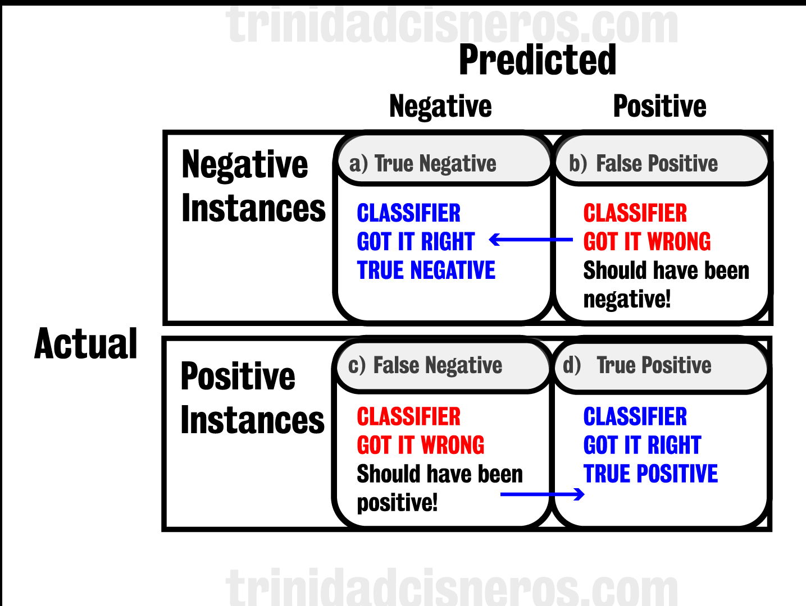
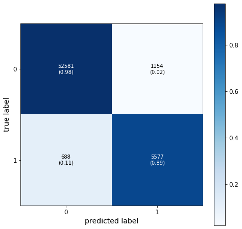
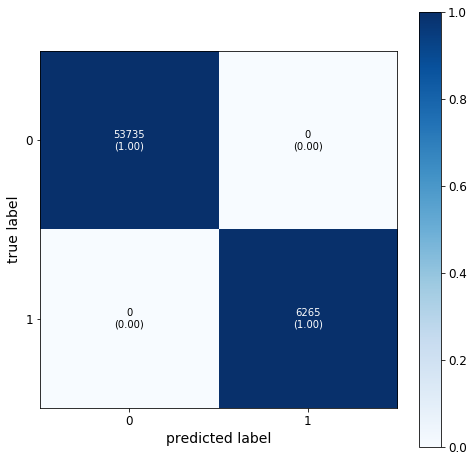
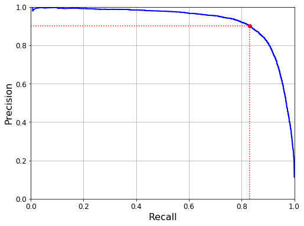

Background Info
Confusion Matrix (CM)
Why is this important?
The project goal
To help explain the confusion matrix.
Data
The MNIST (Modified National Institute of Standards and Technology) dataset contains 70,000
handwritten digits that is used in training and in testing the performance of new machine learning
algorithms (1).
Analysis
The programming language Python was used in this project. The matplotlib libraries were used to
visualize data. The numpy and sklearn libraries
were used in the machine learning models. Specifically, a binary, stochastic gradient descent classifier
was used to train an algorithm to detect a single digit. A confusion matrix was then used to evaluate
the performance of this model.
Objective
The goal of this post is to explain the confusion matrix, and more specifically, accuracy, precision,
recall, and F1.
Brief Intro to MNIST Dataset
The MNIST dataset is used to help explain the confusion matrix. Here is a
description of the dataset:
Figure 1. Digits from the MNIST dataset.
Train and Measure SGDClassifier Model Accuracy
A Stochastic Gradient Descent (SGD) classifier was used to build an algorithm
that would detect a single digit. The number 7 was used in this binary classification example (Figure
2). This digit is present in 10.4% of the training dataset. To determine the ratio of correct
predictions, the accuracy of this model was measured using cross-validation (cross_val_score) with a
K-fold of 3. The accuracy for each fold was above 93%, which is not surprising because 10% of the data
are in fact 7, and the 90% are not. In fact, this is confirmed when a similar test to classify non-7
instances using the same methods is conducted. The accuracy for the cross-validation is above 89% for
each fold. These results confirm that accuracy alone is not an ideal classification
performance measure for skewed dataset (when some classes are more represented than
others)
Figure 2. Example of the number 7 taken from the MNIST dataset.
Confusion Matrix
A confusion matrix requires two sets of data:
1) The actual labels for the dataset (if its a 7 or not a 7)
2) The predicted labels for the dataset that were generated from the classifier
These two arrays are then used to determine the true negative, false positive, false negative, and
true positive classifications, and is represented in the 2D plot in figure 3.
Taking into account the explanation above, we see that for the confusion matrix in this dataset in figure 5:
Figure 3. Confusion Matrix model.
Figure 4. Confusion Matrix model.
Figure 5. Confusion Matrix for SGD Classification of the digit 7 in training dataset.
Figure 6. Example of a Confusion Matrix for SGD Classification of the digit 7 if algorithm perfectly classified each instance.
Precision: tell you how many of the predicted "positives" were real.
Precision is a concise metric that is used to evaluate how well the model was at
classifying real positive value in the dataset.
In this example, it indicates how many of the "Positives" were actually 7.
Are the true positives greater than the false positives?
Looking at the formula for precision, we see that as the false positives go down and approach 0, the
precision approaches 1 (which is perfection).
The precision score in this example was 83%. This tells us that out of 10 instances that the algorithm
classified as 7, two of them were not 7, and were false positives.
Recall: tells you how many of the real "positives" were captured.
Recall is a concise metric that is used to evaluate how well the model was at
capturing all the real positive values in the dataset.
- In this example, it indicates how many of the "Positives" were really 7.
- Ask yourself, is the number of false negatives small?
- As the number of predicted false negatives approach zero, the recall approaches 1.
- The recall in this example was 86%. This tells us that:
-- out of 10 predictions:
---- 8 predictions were correctly classified as 7
---- 2 predictions were misclassified as NOT a 7, and some other number
F1 Explained!
The F1 score is the harmonic mean of the precision and recall.
Precision and recall are combined in the F1 score to provide a single metric that is used when compare
two classifiers.
In this example, the F1 score was 0.86.
The Precision and Recall Trade Offs
Precision and recall are powerful metrics, although there is a trade-off, if
you wish to increase the precision of a model, you will reduce recall, and vice versa.
Why?
The sklearn.metric precision_recall_curve() method was used to calculate the precision, recall, and
thresholds values for this dataset. The results are plotted in Figure 7. We can see in this plot that if
we wanted the model to have a 90% precision (the percent of predicted positive classifications that are actually 7), the threshold would be ~2288. At this threshold, the recall (the percent of the actual 7s that were captured in the predicted model) would be
around 83%. If we increased the precision, the threshold would increase, but the recall would
decrease. This means that the model would capture less of the real 7s, but it would classify less false positives, and be more precise in classifying real 7s.
One way to find a good precision/recall trade-off is to plot the precision directly against the recall. For this example, we see in Figure 8 that a precision of 86% would give us the optimal recall at 83%.
Figure 7. The decision threshold for the precision and recall plot.
Figure 8. Precision versus recall plot.
{kind=link}
{kind=link}
{kind=link}
{kind=link}
{kind=link}
{kind=link}
{kind=link}
{kind=link}
{kind=link}
{kind=link}
{kind=link}